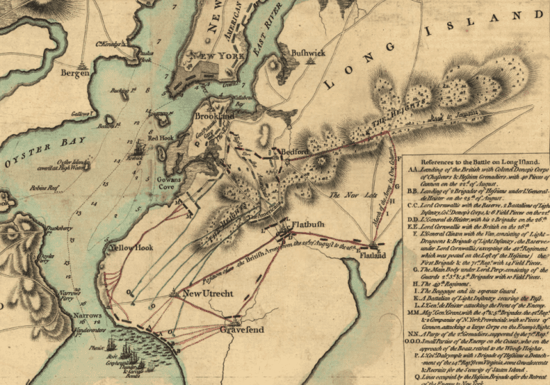

 The Battle of Long Island took place on August 27, 1776. Following the successful seige of Boston George Washington recognized that the British would return with more troops to target New York city. He was correct General William Howe landed the with the largest British fleet assembled to date 32000 soldiers on Staten Island. General Howe was able to succesfully fland George Washington while hew strenghtened his postion in lower Manhattan resulting in the retreat of George Washinton during the night with close to 9000 troops. The British now had a foothold in the Northern Colonies and would begin pursuing Washington and his army.
“Battle of Long Island,” George Washington’s Mount Vernon, accessed May 4, 2021, https://www.mountvernon.org/library/digitalhistory/digital-encyclopedia/article/battle-of-long-island/?gclid=Cj0KCQjwvr6EBhDOARIsAPpqUPFldWapw7IqCM2LOYvDpC4U3XW2pKVx4IwywMZKZr9Gn8xFUQkJKD4aAtl6EALw_wcB.